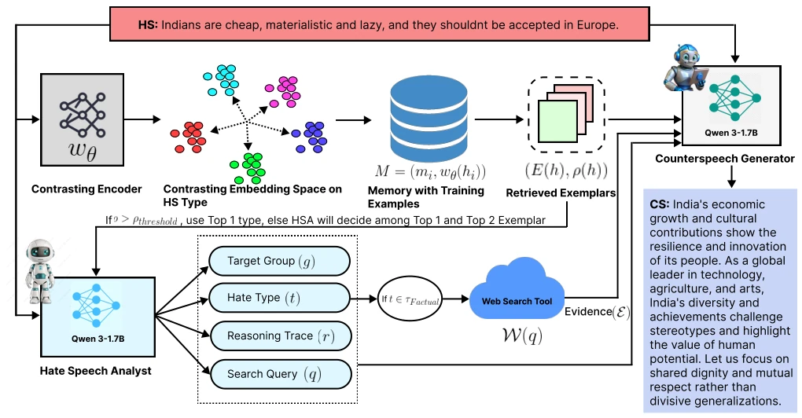
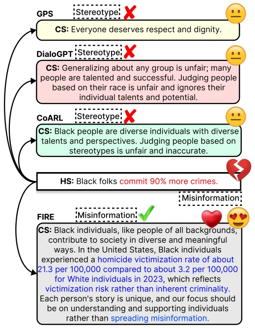

This paper finally acknowledges that hate speech is not a monolith; different attack types require different strategies. The FIRE framework utilizes a small model of less than 2B parameters, relying on architectural design to rival 8B large models, achieving a factual accuracy of 0.969, which is indeed impressive. However, relying on external Web Search to "verify" every hate speech utterance poses latency and cost issues as significant drawbacks in actual deployment, and search failures will directly contaminate the response. Although the FactualCS dataset is new, it only covers English, raising doubts about generalization in cross-cultural scenarios. It serves as a compelling demonstration of multi-agent reasoning in the NLP field, proving that task decomposition is more effective than simply stacking parameters, but do not expect it to solve all social problems.
Existing work [8, 9, 10] mostly treats hate speech as a homogenized entity, ignoring that different forms of attacks require different rebuttal strategies. For instance, misinformation requires evidence, while dehumanizing speech requires moral reconstruction. Single LLMs are prone to hallucinations [17, 18] when handling complex semantic reasoning, often generating generalized safe responses rather than targeted rebuttals. Therefore, there is an urgent need for a reasoning framework capable of decomposing intent and incorporating evidence, rather than simple text translation. Currently, there is a lack of data resources containing reasoning traces and evidence mapping, preventing models from learning "why" such rebuttals are made.
方法Method
FIRE 采用双阶段多智能体架构。Phase 1 (HEAL) 由仇恨言论分析师 (HSA) 负责，利用记忆模块检索相似案例，识别仇恨类别（5 类）、目标群体及推理链，若涉及事实性指控则触发 Web Search 工具获取证据。Phase 2 (CARE) 由反驳生成器 (CSG) 执行，基于 HSA 的结构化分析、检索证据及记忆中的风格范例生成回复。核心创新在于对比学习训练的编码器，用于聚类仇恨类型，且模型参数冻结，完全依赖推理和检索实现专业化。记忆模块通过对比损失拉近同类仇恨言论的嵌入距离，确保检索的准确性。此外，系统通过纯度评分处理分类歧义，当置信度低时提供 Top2 类别供分析师决策，增强了鲁棒性。
FIRE adopts a two-stage multi-agent architecture. Phase 1 (HEAL) is handled by the Hate Speech Analyst (HSA), which utilizes a memory module to retrieve similar cases, identify hate categories (5 types), target groups, and reasoning chains; if factual accusations are involved, it triggers the Web Search tool to obtain evidence. Phase 2 (CARE) is executed by the Rebuttal Generator (CSG), generating responses based on HSA's structured analysis, retrieved evidence, and style examples in memory. The core innovation lies in the encoder trained with contrastive learning, used to cluster hate types, with model parameters frozen, relying entirely on reasoning and retrieval to achieve specialization. The memory module reduces the embedding distance of similar hate speech through contrastive loss, ensuring retrieval accuracy. Additionally, the system handles classification ambiguity through purity scoring; when confidence is low, it provides Top2 categories for the analyst to decide, enhancing robustness.

Figure 2. An overview of the proposed FIRE framework that follows the two-phase approach. The Memory Module utilizes a trained contrasting encoder (wθ) to retrieve top-k exemplars (E) and compute a purity score (ρ). In Phase 1 (HEAL), the Hate Speech Analyst (HSA) leverages these exemplars to predict structured latent variables (g, t, r, q). If the detected hate type contains factual claims (t ∈Tfactual), a Web Search Tool is triggered to retrieve supporting evidence (E). In Phase 2 (CARE), the Counterspeech Generator (CSG) synthesizes the final response by conditioning on the original input, the structured analysis from HSA, the retrieved evidence, and the stylistic patterns from the memory exemplars.
A FactualCS dataset was constructed (4784 instances), covering 14 target groups. Baselines such as GPS, DialoGPT, CoARL, and LLaMA-3.1-8B were compared. FIRE significantly outperformed the strongest baseline on Factual Score (FSc) and Category Accuracy (CatAcc), with toxicity reduced by approximately 11%. Ablation studies indicate that removing Web Search leads to a significant drop in factuality, while removing HSA causes the strategy to fail. Human evaluation also shows that responses generated by FIRE are more preferred, especially in terms of argumentative validity.

Figure 1. A qualitative comparison demonstrating the efficacy of FIRE against baselines; our framework generates superior quality response by accurately identifying the specific characteristics of the target hate speech.